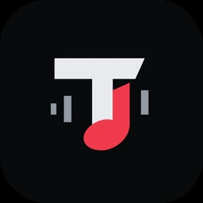

Retrouver les documents de sa classe au même endroit, sans se perdre dans les groupes de discussion.
Le besoin. Les supports de cours se dispersent. Klassio rassemble les ressources par classe et par matière, dans un format adapté aux usages universitaires locaux.
Rejoindre une classe avec un code, sans compte étudiant.
Cours, TD et exercices classés par matière.
Publication enseignante par lien dédié et consultation hors connexion des documents conservés.
Une application Android native, pensée autour de la bibliothèque
musicale de l’appareil.

Tchatz MusicVotre musique. Sur votre appareil.
Identité visuelle officielle. Aucune capture réelle de
l’interface mobile n’est encore disponible.
Android natif · Lecteur localAPK v1.0.0
Tchatz Music
Écouter sa propre bibliothèque musicale, simplement et en privé.
L’application détecte les fichiers audio présents sur le téléphone et
les lit localement. Pas de compte, pas de serveur requis pour écouter,
pas de publicité ni de télémétrie. Ce n’est pas un site web emballé
dans une application.
CompatibilitéAndroid 8.0 et plusAPI 26 minimum · cible API 35
Version disponible1.0.0 · build debugPubliée le 3 novembre 2026
Fonctionnalités principales
Bibliothèque automatique : titres, artistes, albums et pochettes
exposées par l’appareil.
Recherche, tri, favoris, playlists et historique local.
Lecture avec Media3 / ExoPlayer, notification et contrôles système
ou écran verrouillé.
File de lecture, mini-lecteur et lecteur complet.
Accès audio avec autorisation ; dossier local facultatif via SAF.
Environnement technique vérifié
KotlinJetpack ComposeMedia3 / ExoPlayerRoomDataStoreMediaStore / SAF
Architecture locale
MediaStore / SAF → Bibliothèque
→ MediaSession + ExoPlayer
Room conserve les références des favoris, playlists et l’historique
; DataStore conserve les préférences. Aucun audio n’est copié en
base et aucune permission Internet n’est demandée.
Avant d’installer. L’APK est un build debug, pas
une version Play Store. Android peut demander d’autoriser cette
source. La signature debug du runner peut changer : les mises à jour
par-dessus une installation existante ne sont pas garanties.
Désinstaller efface les données locales de l’application.